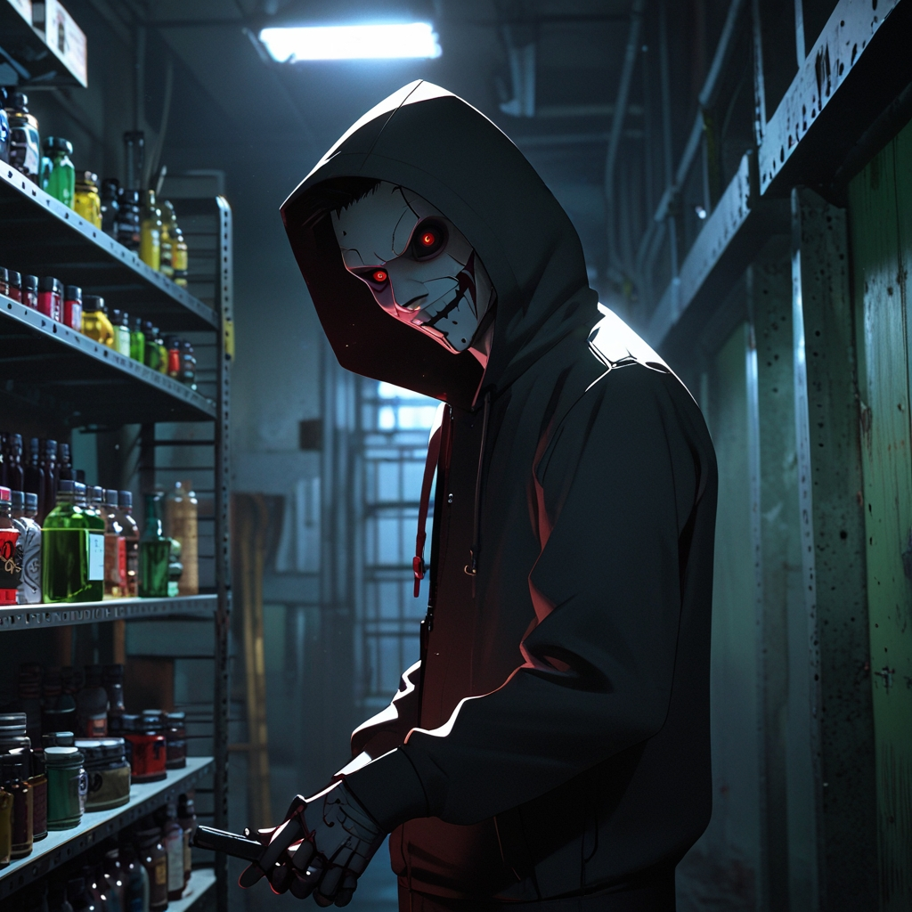
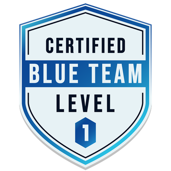
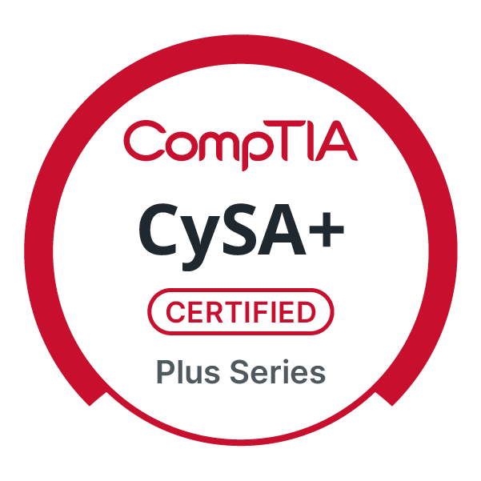
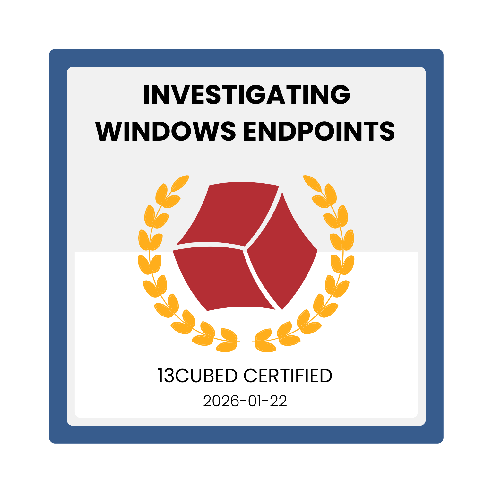

Hey, I'm Shae. I'm based remotely and breaking into cybersecurity with a passion for hands-on learning and real-world application.
I started this journey in 2024 after completing a 6-month bootcamp and I've been hooked ever since. I've covered a lot of ground, from networking fundamentals and traffic analysis with Wireshark, to threat hunting with SIEM platforms like Splunk and MS Sentinel.
My roots are in Blue-Teaming, but I'm genuinely passionate about Red-Teaming and offensive security. I made a deliberate choice not to skip the foundational work because you need to understand your environment before running tools blindly. Knowing what's happening on the backend matters whether you are attacking or defending.
I'm currently completing a Technical Learning Internship with CyLynk, who've been instrumental in keeping me on track early on. They've given me a solid foundation in hands-on skills and networking knowledge. My mentors have really helped streamline my learning learning path and put effort in the right areas.
This portfolio is a checkpoint log of my cybersecurity journey. As I progress, it'll grow with me.
Enjoy!



I'm building a toolkit that bridges defensive and offensive perspectives. My foundation is in blue team operations—traffic analysis, log correlation, threat detection—but I'm deliberately upskilling in red team techniques to understand attacks from both sides. This approach shapes how I choose tools and frameworks: